Python
def nazwa_funkcji(to_co_wrzucamy):
return działanie funkcjiOtrzymuj maila, gdy pojawią się nowe wpisy
Link z potwierdzeniem znajdziesz na swoim mailu. Jeśli go tam nie ma, sprawdź spam.
Jakub Jędrusiak
27 lipca 2023
Czy masz czasem wrażenie, że rzeczy w matematyce nazywają się bez sensu? To jest bardzo słuszne wrażenie. Dziś na warsztat weźmiemy funkcje, które są zmorą uczniów liceów ze względu na nową, dziwną notację typu \(f(x)\), cały pozornie chaotyczny język, który odrywa funkcje od reszty matematyki, a także wrażenie, że nijak nie idzie tego spotkać w „prawdziwym życiu”, cokolwiek to jest. Ja właśnie spędzam wieczór z prawdziwego życia na pisaniu o funkcjach. Do czegoś mi się jednak przydały. Zaczynając jednak od nazwy – dlaczego „funkcja”? Bo Leibniz źle rozumiał to słowo. A że raz przyjęte konwencje trzymają się mocno, to do dzisiaj, właściwie przypadkowo, nazywamy tę rzeczy funkcjami.
Skorzystam tutaj z metafory pożyczonej od Jasona Wilkesa, której używał w swojej książce „Spal pracownię matematyczną”.
Wyobraź sobie maszynę. Wielka, opasła maszyna z wlotem u góry i wyjściem z boku. Do maszyny dołączony jest zestaw metalowych cyferek wybitych na grubych blaszkach. Bierzesz do ręki pierwszą z brzegu blaszkę z wartością 4. Wrzucasz do wejścia przypominającego wlot na monety w automacie z kawą. Maszyna zaczyna buczeć, wydawać metaliczne dźwięki, łupnięcia, stukoty, a po chwili rozlega się dźwięk dzwoneczka i z wylotu wypada blaszka z numerkiem 7.
„Hmm, ciekawe, co się stanie, kiedy wrzucę inną liczbę?” – myślisz.
Wrzucasz bierzesz więc blaszkę z numerkiem 8, wrzucasz ją do maszyny i po chwili otrzymujesz 11. Może Ci się już w głowie rodzić pomysł, jak nasza maszyna działa. Żeby go przetestować wrzucasz do maszyny przed chwilą wyciągniętą blaszkę z numerem 11 i po chwili dostajesz z powrotem blaszkę z numerem 14. Domyślasz się już, co się stanie, jak wrzucisz do maszyny 2? Najprawdopodobniej wyrzuci ona 5. Gratuluję, rozgryzłeś(-aś) tajemnicę mojej maszyny – jakąkolwiek liczbę w niej nie umieścisz, dostaniesz liczbę o 3 większą.
Wrzucasz do maszyny kolejne liczby i patrzysz, jak Twoja hipoteza się uwiarygadnia:
\[ 1 \rightarrow 4 \] \[ 15 \rightarrow 18 \]
\[ -10 \rightarrow -7 \]
Co maszyna z siebie wyrzuci, jak wrzucę do niej:
\(18\)
\(45\)
\(-20\)
\(0\)
\(18 \rightarrow 21\)
\(45 \rightarrow 48\)
\(-20 \rightarrow -17\)
\(0 \rightarrow 3\)
Z zadowoleniem bierzesz marker i na maszynie piszesz „Maszyna dodająca 3”. Pięknie. Patrzysz jednak w dalsze części hali i widzisz dziesiątki maszyn do przetestowania. Zaczynasz się więc zastanawiać, czy nie da się tego zapisać jakoś zwięźlej?
Stajemy przed zadaniem, by w zwięzły sposób opisać działanie naszej maszyny dodającej 3. W tym celu musimy wymyślić kilka skrótów na oznaczenie:
Nazwy maszyny.
Tego, co wrzucamy do maszyny.
Tego, co maszyna wypluwa.
Tego, co maszyna konkretnie robi (tzn. że dodaje 3).
Naszą maszynę najprościej nazwać \(m\) jak maszyna albo \(t\) jak trzy. Mógłbym użyć całego słowa \(maszyna\) lub \(trzy\), ale komu chce się to pisać? Dalej, to, co wrzucamy do maszyny mogę nazwać \(l\) jak liczba, \(b\) jak blaszka albo \(c\) jak… coś. Moglibyśmy wymyślać tak dalej, ale żeby nie utonąć w alfabecie arbitralnych skojarzeń, możemy też wykorzystać dwa już ustalone skróty do stworzenia dwóch kolejnych.
W jaki sposób? Weźmy na tapet 4. skrót, czyli opis działania maszyny. Wiem, że maszyna dodaje 3 do dowolnej liczby, którą do niej wrzucę. Jeśli wrzucę 5, to dostanę 8, jeśli wrzucę 12, to dostanę 15 itd. Ustaliłem jednak, że to, co wrzucam do maszyny, mogę określić literką \(b\). To, że maszyna dodaje 3 mogę więc zapisać jako \(b + 3\). Skoro \(b\) to dowolna liczba, to \(b + 3\) to ta liczba powiększona o 3.
Mając te skróty uzyskałem już całkiem zwięzły sposób opisu naszych maszyn. Zamiast słów mógłbym napisać na maszynie:
\[ m = b + 3 \]
Prawda? Niby prawda, ale ten zapis ma kilka wad. Po pierwsze znak \(=\) oznacza w matematyce „to jest to samo, co”. Jeśli \(m\) to nazwa naszej maszyny, to stwierdzamy, że „maszyna to jest to samo, co dowolna liczba dodać trzy”. Jako skrót myślowy działa to nieźle, ale nie o to dokładnie nam chodzi. Maszyna nie jest dowolną liczbą powiększoną o trzy, maszyna to robi, ale nie jest tym. Tak jak maszynka do mielenia mięsa nie jest tym samym, co zmielone mięso.
Czepiam się, wiem, ale ten zapis utrudnia nam też inną rzecz – załóżmy, że chcemy zapisać, że wrzuciliśmy do maszyny 5 i wypluła ona 8. Jak to zrobić w tej konwencji? \(5 = 8\)? To już trochę krok za daleko. Matematycznej inkwizycji nie ma, ale jakby była, to taki zapis byłby heretycki. Możemy jednak wykorzystać nieco zgrabniejszą konwencję i od razu zawrzeć w niej skrót numer 3., czyli oznaczenie tego, co maszyna z siebie wypluwa. Proponuję zapisać to tak:
\[ m(5) = 8 \]
Ten nawias nawet wygląda jak kieszonka. Sama część \(m(5)\) wskazuje, że do maszyny \(m\) wrzuciliśmy liczbę 5. Po znaku równa się piszemy to, co maszyna z siebie wypluła. Teraz wielkie technikalium – sam skrót \(m(5)\) dosłownie nie oznacza samego aktu włożenia 5 do maszyny \(m\), ale to, co maszyna \(m\) wypluje, kiedy wrzucę do niej 5. Rozróżnienie to brzmi jak sztuka dla sztuki i czepialstwo i trochę się zgadzam, ale pozwala nam to na kilka rzeczy. Po pierwsze, znika problem ze znakiem \(=\) – \(m(5)\) rzeczywiście jest tym, co maszyna z siebie wypluje, jak wrzucę do niej 5, czyli \(m(5)\) to jest 8 na takiej samej zasadzie, jak \(5 + 3\) to jest 8. Dzięki temu mogę też zapisać coś takiego:
\[ 10 + m(5) = 18 \]
Ponieważ \(m(5)\) to jest 8, to mogę zamiast 8 zapisać \(m(5)\).
Spróbuj to policzyć:
\(m(2) + 4\)
\(10 - m(6)\)
\(2 \times m(-5) + 1\)
\(m(2) + 4 = 5 + 4 = 9\)
\(10 - m(6) = 10 - 9 = 1\)
\(2 \times m(-5) + 1 = 2 \times -2 + 1 = -4 + 1 = -3\)
Zbierzmy to więc do kupy i stwórzmy skrót ostateczny. Jak oznaczyć maszynę \(m\), która bierze dowolną liczbę (oznaczoną jako \(b\)) i dodaje do niej 3? Proponuję coś takiego:
\[ m(b) = b + 3 \]
Ten zapis buduje na wszystkim, co ustaliliśmy do tej pory – do maszyny o nazwie \(m\) wrzucam liczbę \(b\) – \(m(b)\) – a maszyna wyrzuca z siebie \(b + 3\). Przypominam – \(m\) i \(b\) to tylko arbitralne literki. Równie dobrze mógłbym zapisać \(a(z) = z + 3\), \(r(k) = k + 3\), \(\dagger(\rceil) = \rceil + 3\), a czasem na matematyce z przekory pisałem \(ą(ć) = ć + 3\). Możemy opisywać nasze maszyny jak chcemy, ale najlepsze skróty to takie, które przypominają nam, co oznaczają.
Spróbuj zakodować następujące maszyny:
Maszyna dodająca 4.
Maszyna mnożąca przez 3.
Maszyna mnożąca przez 2, a potem dodająca 1.
Maszyna najpierw dodająca 1, a potem mnożąca przez 2.
Maszyna dzieląca na 7.
Maszyna, która zawsze wyrzuca 5.
\(c(l) = l + 4\)
\(t(l) = 3 l\)
\(d(l) = 2 l + 1\)
\(j(l) = (l + 1) \times 2\) lub po uproszczeniu \(j(l) = 2 l + 2\)
\(s(l) = \frac{l}{7}\)
\(p(l) = 5\)
Po co tworzymy maszyny? Żeby odwalały za nas czarną robotę. Dodawanie 3 nie jest jakoś szczególnie trudne, ale co jeśli musimy zrobić coś bardziej skomplikowanego? Albo dodać 3 do 10 000 różnych liczb? Właśnie po to korzystamy z maszyn – nikt nie chce się w to bawić ręcznie.
Załóżmy więc, że chcemy stworzyć maszynę liczącą pole kwadratu. Nazwijmy ją \(k\) jak kwadrat. Jak do każdej maszyny, musimy coś do naszej maszyny wrzucić. Sama z siebie nic nie zrobi. Czego więc może potrzebować maszyna licząca pole kwadratu? Długości boku tego kwadratu. Oznaczmy go sobie jako \(b\). Jak więc z długości boku policzyć pole? Podnieść ów bok do kwadratu. Spróbuj zebrać to do kupy i sprawdź, czy masz rację poniżej.
\[ k(b) = b^2 \]
Każdy wzór matematyczny da się więc przerobić na maszynę. Mogło Ci się to zdarzyć, jeśli kiedykolwiek pisałeś(-aś) formuły w Excelu. Jeśli dostałbyś(-abyś) plik Excela z 1000 boków kwadratów i zadaniem przygotowania kolumny z polem kwadratu, prawdopodobnie użyłbyś(-abyś) formuły typu = A1 * A1, a potem przeciągnąłbyś(-abyś) ją tak, żeby policzyła pola wszystkich kwadratów.
Wszystkie maszyny, które zapisaliśmy w poprzednim zadaniu, moglibyśmy rzeczywiście stworzyć. Może nie w formie pudełka przerabiającego blaszki, ale możemy łatwo je zaprogramować. Nie jest to konieczne do zrozumienia funkcji, ale bardzo polecam, żeby chociaż spróbować. Wczesne zainteresowanie programowaniem mnie osobiście mocno pomogło w późniejszej nauce matematyki.
Każdy język programowania pozwala nam stworzyć własne maszyny. Jeśli nie pozwala, to śmiem wątpić, czy w ogóle możemy mówić o języku programowania1. W naszym wypadku użyjemy jednego z dwóch języków programowania powszechnie używanych w nauce – R i Python. Oba możemy uruchomić w przeglądarce. Jeśli czytasz to zamierzając uczyć się statystyki, polecam wybrać R2, a jeśli nie, to Python może być nieco bardziej przejrzysty.
Jak więc rzeczywiście stworzyć naszą maszynę? W Pythonie wykorzystamy następującą składnię:
W R składnia wygląda tak:
Możemy wykorzystać oznaczenia, które wcześniej wprowadziliśmy i stworzyć naszą maszynę dodającą 3:
Gdzie to wpisać? Jeśli, za moją sugestią, korzystasz z Programiz, wpisz to w oknie po lewej stronie i kliknij guzik Run. Od teraz możesz po stronie prawej wywołać swoją funkcję. Jeśli wpiszesz np. m(5) i klikniesz enter, funkcja rzeczywiście wypluje z siebie wynik, czyli 8.
Możesz w ten sposób stworzyć dowolną liczbę maszyn, ale jeśli piszesz w Pythonie, uważaj na wcięcia. Jeśli tworzysz jedną maszynę pod drugą, słowo def drugiej maszyny nie może być poprzedzone spacjami.
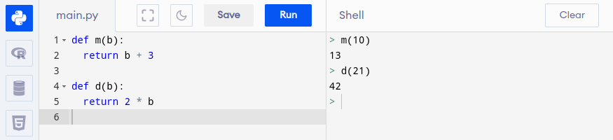
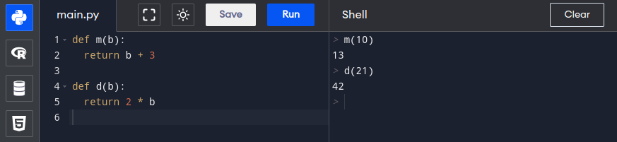
Spróbuj stworzyć maszyny z poprzedniego zadania w wybranym języku programowania.
\(c(l) = l + 4\)
\(t(l) = 3 l\)
\(d(l) = 2 l + 1\)
\(j(l) = (l + 1) \times 2\) lub po uproszczeniu \(j(l) = 2 l + 2\)
\(s(l) = \frac{l}{7}\)
\(p(l) = 5\)
Święcie wierzę, że w matematyce połowa problemów na późniejszych etapach nauki bierze się z problemów z nazewnictwem. Nie da się zrobić zadania, jeśli się nie wie, o co pytają. Dodajmy do tego, że wszystko ma po kilka nazw oraz miesza się nazewnictwo algebraiczne i opisujące wykresy (o których później). Spróbujmy to więc uporządkować.
To, co nazywaliśmy maszynami, uniwersalnie nazywa się funkcjami. Typową nazwą dla funkcji jest \(f\), ale można je nazywać tak, jak się chce.
To, co wrzucamy do funkcji nazywa się argumentem albo miejscem. Zazwyczaj oznacza się to literą \(x\).
To, co funkcja z siebie wyrzuca to wartość funkcji. Jeśli przyjmiemy poprzednie oznaczenia, wartość funkcji \(f\) dla argumentu \(x\) (czyli co funkcja zwróci, jak wrzucę do niej \(x\)) oznaczymy jako \(f(x)\). Czasami, jeśli mamy tylko jedną funkcję, wartość bywa oznaczana literką \(y\). Oznaczenia \(y\) i \(f(x)\) są wymienne.
Przy okazji możemy wprowadzić pojęcie miejsca zerowego. Jest to miejsce (czyli argument, \(x\)), dla którego wartość funkcji wynosi 0. Innymi słowy, liczba, którą muszę wrzucić do funkcji, żeby funkcja wypluła 0. Dla maszyny dodającej 3 miejscem zerowym jest -3, bo \(m(-3) = 0\). Podkreślam jeszcze raz – miejsce zerowe to jest argument, czyli to, co wrzucam do funkcji. To wartość musi wynosić 0.
W praktyce przy okazji mówienia o funkcjach liczymy jedną z dwóch rzeczy – co funkcja z siebie wyrzuca, kiedy włożę do niej \(x\) albo co muszę włożyć do funkcji, żeby wypluła z siebie \(y\).
Pierwszy scenariusz obejmuje to, co programowaliśmy w punkcie 3.1. Jeśli chcielibyśmy policzyć to ręcznie, wystarczy, że zamiast skrótu typu \(l\) czy \(x\) zapiszemy liczbę, którą wrzucamy do funkcji. Czyli jeśli \(m(l) = l + 3\), to \(m(5) = 5 + 3\). Działa dokładnie tak samo też dla bardziej skomplikowanych funkcji.
Poniżej przedstawiono kilka różnych funkcji oraz wartości do policzenia. Zwróć uwagę na nazwy i spróbuj rozwiązać przykłady.
\[ a(x) = 7 + x \] \[ b(z) = 5 \times z \] \[ c(r) = 4 \times r + 12 \] \[ d(g) = \frac{7 g + 21}{2 g + 1} \]
\(a(3)\)
\(a(11)\)
\(a(-10)\)
\(a(-7)\)
\(a(0)\)
\(b(5)\)
\(b(-12)\)
\(b(0)\)
\(c(6)\)
\(c(-8)\)
\(c(0)\)
\(c(-3)\)
\(d(2)\)
\(d(0)\)
\(d(-5)\)
\(d(-3)\)
\(a(3) = 10\)
\(a(11) = 18\)
\(a(-10) = -3\)
\(a(-7) = 0\)
\(a(0) = 7\)
\(b(5) = 25\)
\(b(-12) = -60\)
\(b(0) = 0\)
\(c(6) = 36\)
\(c(-8) = -20\)
\(c(0) = 12\)
\(c(-3) = 0\)
\(d(2) = 7\)
\(d(0) = 21\)
\(d(-5) = 1 \frac{5}{9}\)
\(d(-3) = 0\)
W tym scenariuszu liczyliśmy wartość funkcji, ale czasem chcemy policzyć, jaki powinien być argument. Przypomnij sobie, co to jest miejsce zerowe – co muszę wrzucić do funkcji, żeby wypluła mi 0. To też da się liczyć. Bardziej realny przykład. Wyobraź sobie, że masz funkcję, która liczy, ile pieniędzy dostaniesz z rocznej lokaty, w zależności od tego, ile pieniędzy wyłożysz na lokatę. Pierwszy scenariusz to sprawdzanie dokładnie tego, czyli ile dostanę jak wpłacę 10 000 zł, a ile, jak wpłacę 30 000 zł. Drugi scenariusz to liczenie, ile muszę wpłacić, żeby otrzymać po roku 100 zł, a ile, żeby otrzymać 1000 zł.
W praktyce liczy się to według dość prostej logiki. Chcę wiedzieć, ile muszę włożyć do maszyny dodającej 3, żeby wypluła 7. Zapisując to matematycznie, chcę wiedzieć, kiedy wartość funkcji \(m\) wynosi 7, czyli kiedy \(m(x) = 7\). Jednocześnie wiem, że \(m(x)\) to po prostu \(x + 3\), bo tak działa funkcja dodająca 3. Wychodzi mi z tego proste równanie.
\[ m(x) = 7 \] \[ x + 3 = 7 \] \[ x = 4 \]
Na tej samej zasadzie możemy rozwiązywać bardziej skomplikowane równania, np. znaleźć miejsce zerowe funkcji \(y = 5x + 3\) (pamiętaj, \(y\) to inne oznaczenie wartości funkcji).
\[ y = 0 \]
\[ 5x + 3 = 0 \]
\[ 5x = -3 \]
\[ x = -\frac{3}{5} \]
Weźmy funkcje z poprzedniego zadania. Odkryj, co musisz wrzucić do każdej z tych funkcji, żeby przyjęła każdą z podanych wartości (każdy przykład policz dla każdej z funkcji).
\[ a(x) = 7 + x \] \[ b(z) = 5 \times z \] \[ c(r) = 4 \times r + 12 \] \[ d(g) = \frac{7 g + 21}{2 g + 1} \]
\(10\)
\(1\)
\(0\) (miejsce zerowe)
\(-4\)
Funkcja \(a\)
\(3\)
\(-6\)
\(-7\)
\(-11\)
Funkcja \(b\)
\(2\)
\(\frac{1}{5}\)
\(0\)
\(-\frac{4}{5}\)
Funkcja \(c\)
\(-0,5\)
\(-2,75\)
\(-3\)
\(-4\)
Funkcja \(d\)
\(\frac{11}{13}\)
\(-4\)
-\(3\)
\(-1\frac{2}{3}\)
Nie da się zapisać na kartce wszystkich możliwych wartości funkcji. Między 0 a 1 jest nieskończenie wiele liczb i każdą z tych liczb można do funkcji wrzucić. Ciekawe rozwiązanie tego problemu stworzył jednak Kartezjusz. Tak, ten od „Myślę, więc jestem”. Kartezjusz narysował dwie linie przecinające się pod kątem prostym, a potem oznaczył siatkę.
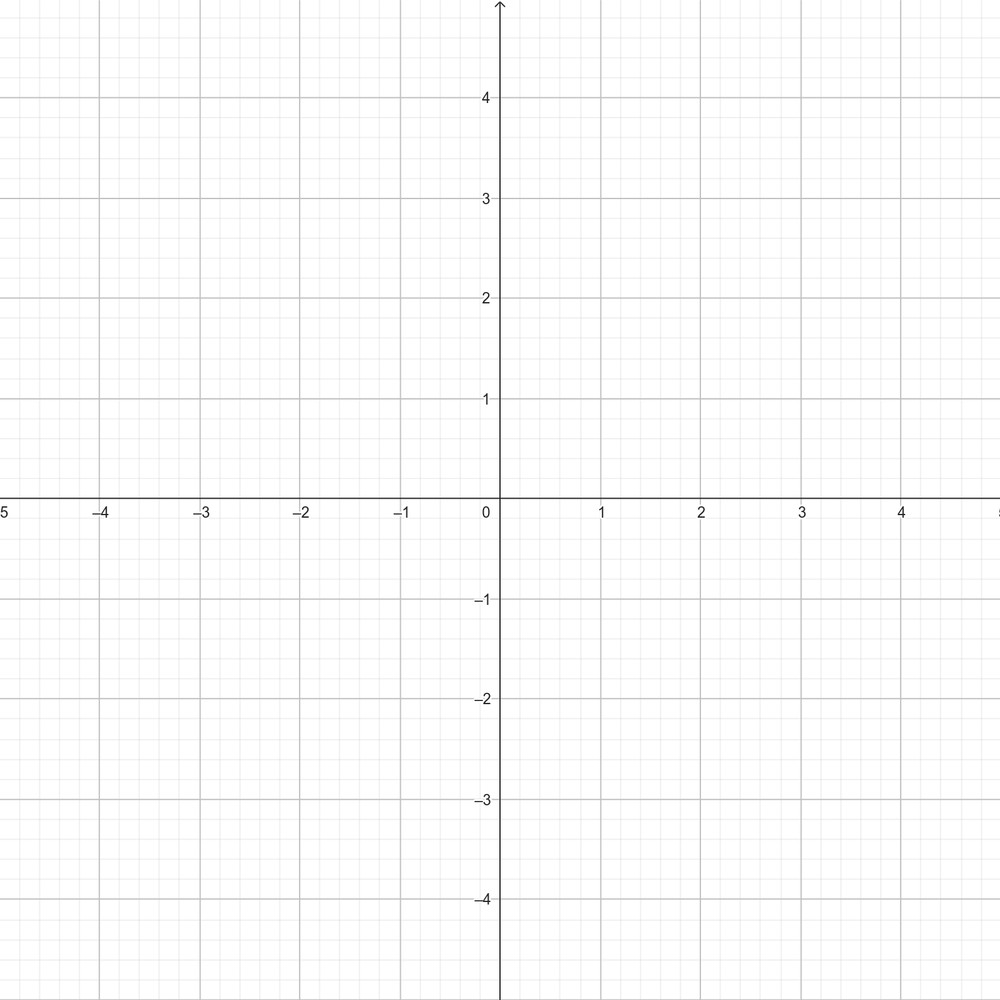
Ten pozornie banalny pomysł, nieobcy nikomu, kto kiedykolwiek grał w statki, to wielka rewolucja. Dzięki niej możemy przedstawić nieskończenie wiele wartości danej funkcji oraz zyskać całkowicie nową perspektywę na funkcje. Teraz wystarczy, że umówimy się, że pozioma oś to argumenty, a pionowa to wartości. Co to znaczy?
Wyobraźmy sobie funkcję dodającą 1. Matematycznie możemy to zapisać np. jako \(j(l) = l + 1\). Teraz wrzućmy do tej funkcji liczbę 1 – \(j(1) = 1 + 1 = 2\). Ten sam wniosek możemy nanieść na wykres. Na osi poziomej znajdujemy liczbę, którą wrzuciliśmy do funkcji (tj. 1), a na osi pionowej liczbę, którą funkcja wypluła (tj. 2). Na przecięciu jednego z drugim możemy teraz postawić kropkę.
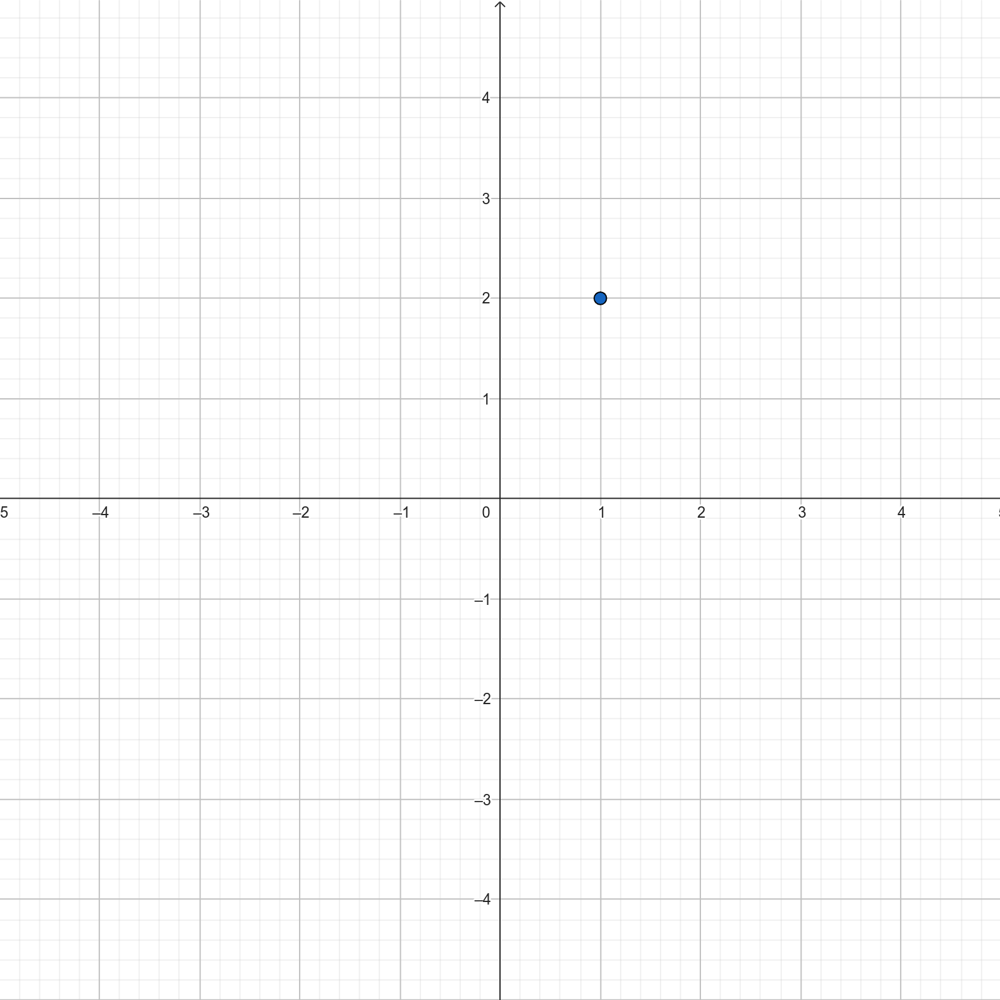
Zróbmy to samo dla 0 i 2. \(j(0) = 1\) i \(j(2) = 3\). Zaznaczmy to.
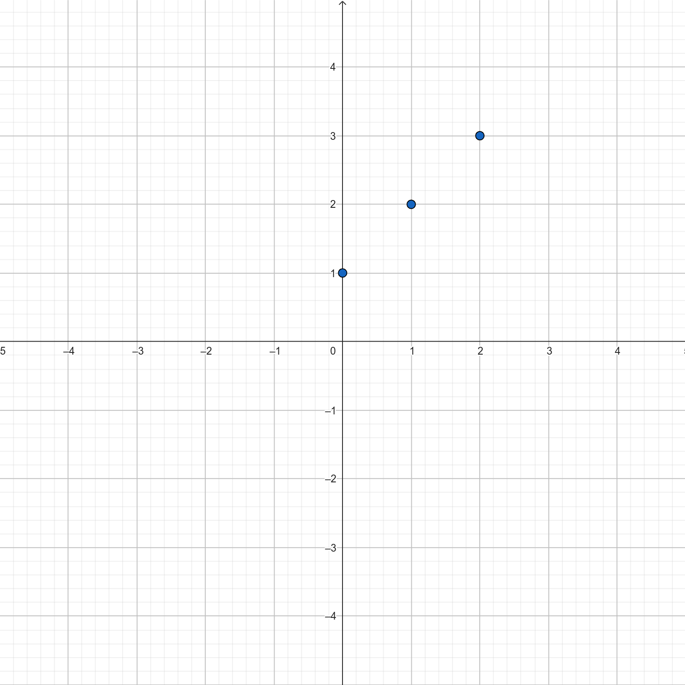
Ale po co się ograniczać? Zaznaczmy serię innych takich punktów.
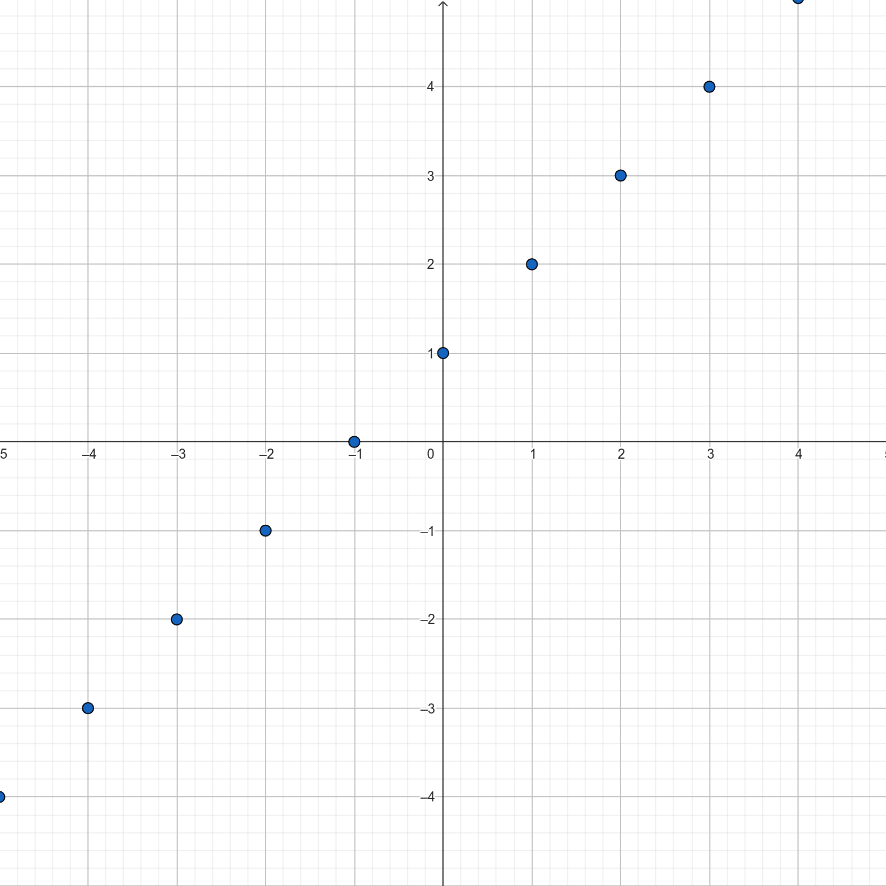
To, co otrzymaliśmy, to ewidentnie prosta linia. Połączmy więc te punkty.
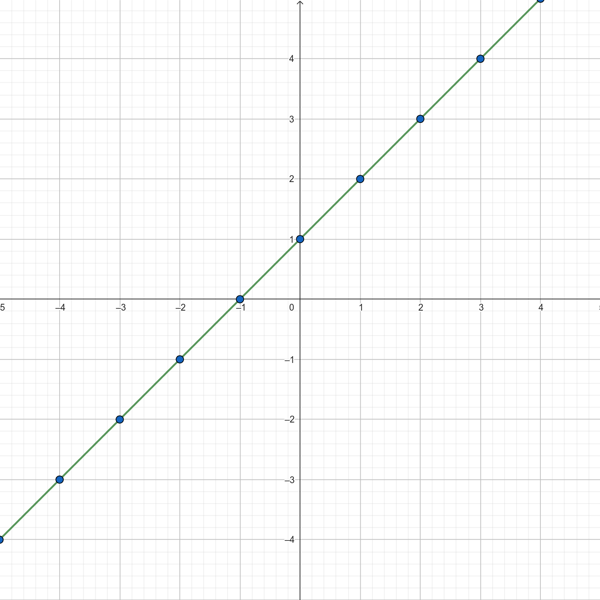
Tak naprawdę, żeby taką linię narysować, wystarczą dwa punkty. Gdy przykręcasz listwę do ściany, musisz ją przykręcić w dwóch miejscach, żeby się nie ruszała.
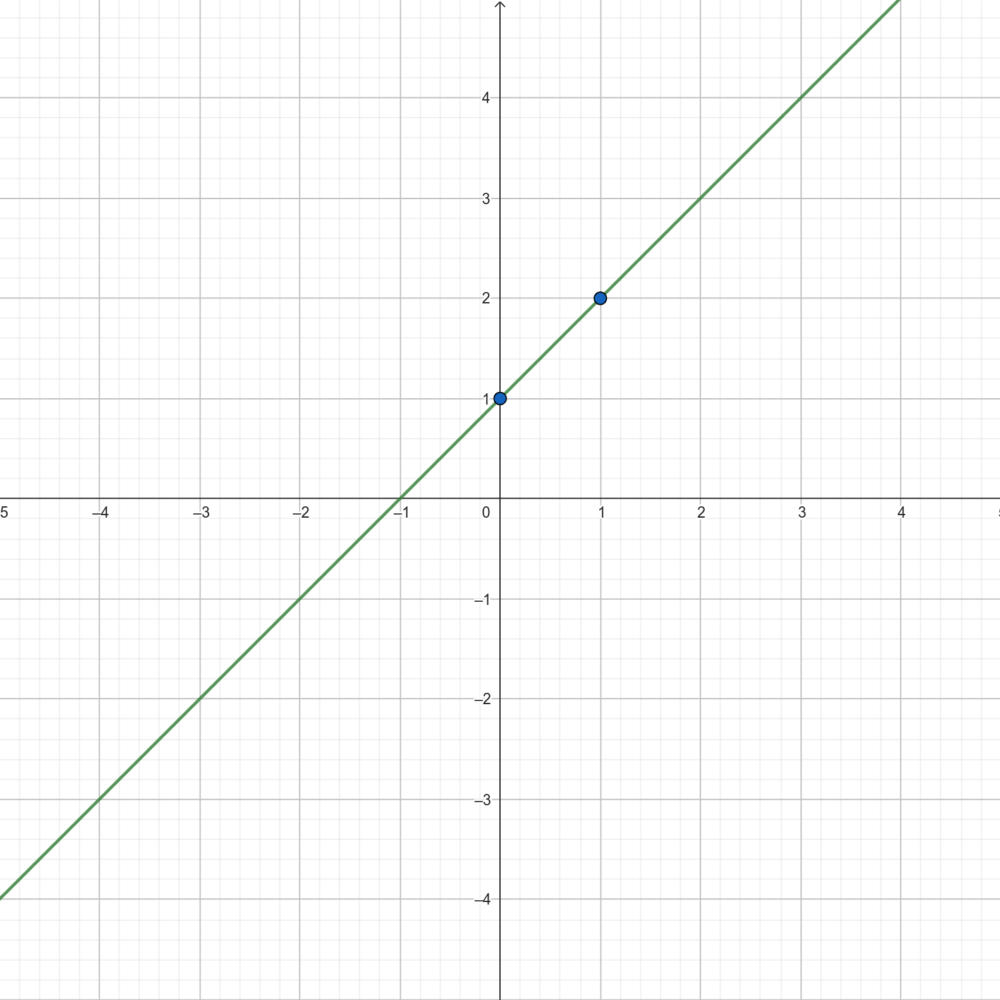
Taka linia pozwala nam odczytywać wartości dla dowolnego argumentu. Dla przykładu, jeśli chcę sprawdzić, co funkcja wypluje, jak wrzucę do niej 2, to szukam 2 na osi poziomej i patrzę, jak wysoko jest tam moja linia. W tym wypadku przecięcie jest w punkcie \((2, 3)\). Identyczny wniosek otrzymamy licząc wartość funkcji algebraicznie \(j(2) = 2 + 1 = 3\).
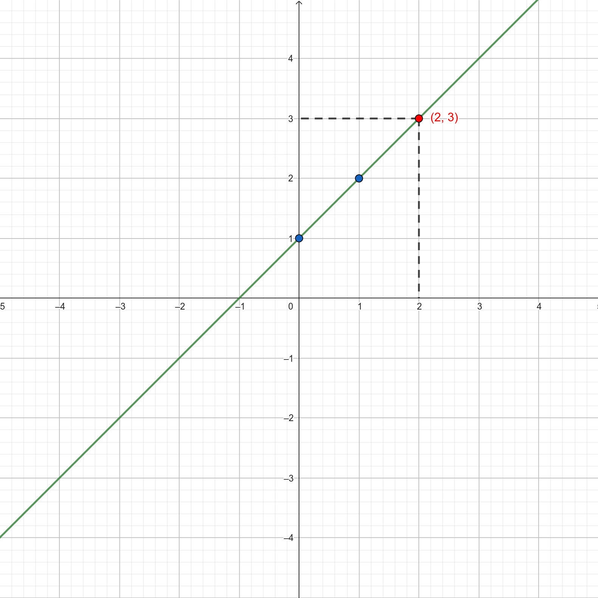
Ten wynalazek w postaci układu współrzędnych pozwala nam patrzeć na funkcje z zupełnie innej perspektywy. Funkcja nie jest już tylko maszyną, która zjada i wypluwa liczby. Nagle funkcja (a właściwie jej wykres) ma kształt i położenie. Możemy mówić o funkcji na przykład, że ma kształt linii albo paraboli. Możemy o jakiejś funkcji powiedzieć, że jest bardziej nachylona niż inna funkcja. Możemy powiedzieć, że jedna funkcja jest wyżej, a inna niżej. Funkcje mogą się przecinać, albo przecinać się z osiami.
Jednak ta zmiana perspektywy potrafi też bardzo dużo namieszać. Jest naturalne dla np. zadań maturalnych, że opisują funkcję raz jak maszynę, a raz, jak wykres. W Księdze Rodzaju Bóg stwarza świat i porządkuje bezład przez rozdzielanie. Co prawda teraz siedzimy w odmętach matematycznego piekła, ale spróbować można. Rozdzielmy te dwa sposoby mówienia o funkcjach na graficzny i algebraiczny, a następnie spróbujmy jeden na drugi tłumaczyć.
Punkt to miejsce na wykresie opisywane przez parę liczb – jego współrzędne. Punkty zaznaczamy tam, gdzie argument przecina się z wartością. Para liczb typu \((2, 3)\) oznacza więc, że nasz punkt jest dwa oczka w prawo i trzy oczka do góry w układzie współrzędnych. Jeżeli nasz punkt leży na linii wykresu, mówimy, że punkt należy do wykresu funkcji. To jest opis graficzny, możemy zobaczyć to na wykresie. Co to znaczy w języku algebraicznym, czyli w języku maszyn?
Maszyny nie mają osi ani linii wykresu, one tylko przyjmują i wyrzucają liczby. Nie zapominajmy jednak, co oznaczają współrzędne. Pierwsza współrzędna to współrzędna pozioma (\(x\)), a druga to współrzędna pionowa (\(y\)). Współrzędne poziome oznaczają to, co wrzucam do funkcji, a pionowe to, co funkcja z siebie wypluwa. Stwierdzenie „Punkt \((2, 3)\) należy do wykresu funkcji.” oznacza ni mniej, ni więcej, jak „Jeżeli wrzucę do funkcji \(2\), to wypluje ona \(3\).” albo matematycznie \(f(2) = 3\).
Jeżeli spotkasz się z zadaniem typu „Sprawdź, czy punkt \((5, 11)\) należy do wykresu funkcji \(y = 2x + 1\)?“, to możesz to sobie przetłumaczyć z graficznego na algebraiczny – sprawdź, czy jak do funkcji \(y = 2x + 1\) wrzucisz \(5\), to wyjdzie ci \(11\).
Czy punkt \((21, 7)\) należy do wykresu funkcji \(y = \frac{x}{3}\)?
Punkt \(A\) ma współrzędną \(x\) równą \(7\) i należy do wykresu funkcji \(f(x) = 3x - 10\). Znajdź drugą współrzędną punktu \(A\).3
Punkt \(B\) ma współrzędną \(y\) równą 0 i należy do wykresu funkcji \(y = -2x + 20\). Znajdź pierwszą współrzędną punktu \(B\).
Tak.
\(f(7) = 3 \times 7 - 10 = 11\), więc \(A(7, 11)\).
\(f(10) = -2 \times 10 + 20 = 0\), więc \(B(10, 0)\).
Bardzo często w zadaniach jesteśmy proszeni o wyznaczenie punktów przecięcia wykresu funkcji z osią X, rzadziej z osią Y. Co to znaczy w języku algebraicznym?
Spójrz na ten wykres i powiedz, co wspólnego mają wszystkie te punkty?
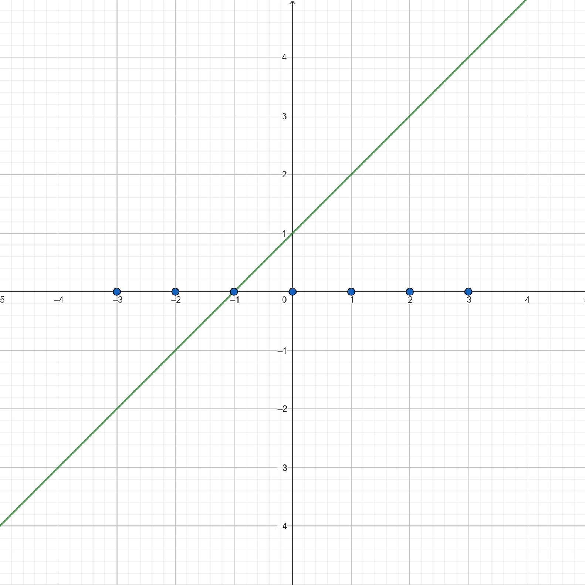
Wszystkie leżą na osi X, to prawda. To jest opis w języku graficznym, gdzie istnieją punkty rozlokowane w przestrzeni. Teraz chcemy jednak przejść z opisu graficznego do algebraicznego, a punktem styku między jednym i drugim są współrzędne. Jaką współrzędną mają wspólną wszystkie te punkty? Po przeanalizowaniu wykresu dochodzimy do wniosku, że każdy z naszych punktów ma współrzędną \(y = 0\). Różnią się natomiast współrzędnymi \(x\).
Jeśli jesteśmy pytani o punkt przecięcia z osią X, innymi słowy jesteśmy pytani o takie miejsce, gdzie \(y = 0\). Takim miejscem dla narysowanej na wykresie maszyny jest punkt o współrzędnych \((-1, 0)\). Jeśli sięgniesz pamięcią do punktu 4., zorientujesz się, że mamy specjalną nazwę na punkty, gdzie \(y\) (czyli wartość funkcji) wynosi \(0\) – miejsce zerowe. Pytanie o punkt przecięcia z osią X jest więc tak naprawdę znanym nam już pytaniem o miejsce zerowe, gdzie ewentualnie odpowiedź będzie trzeba zapisać jako \(A(-1, 0)\) zamiast \(f(-1) = 0\).
Podobne pytanie o wspólną współrzędną możemy sobie zadać dla punktów na osi Y.
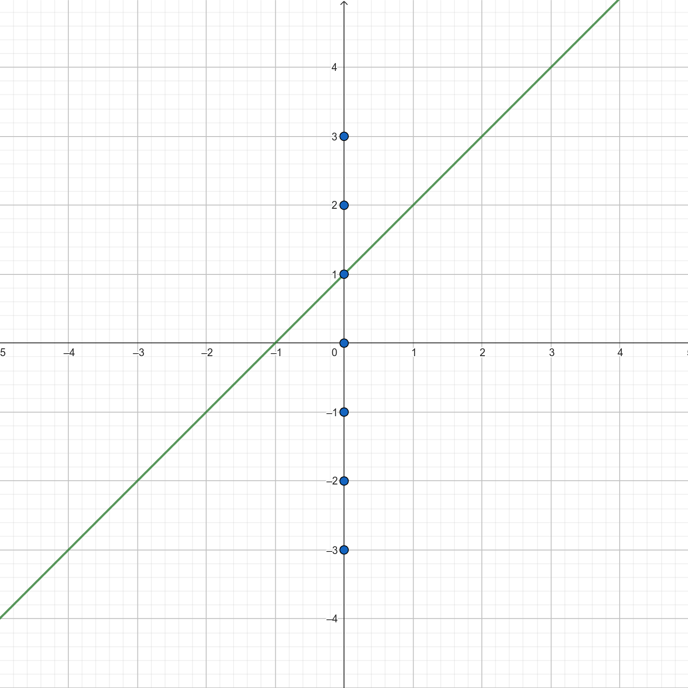
Tym razem pewnie szybciej możemy dojść do wniosku, że wszystkie zaznaczone punkty mają wspólną współrzędną \(x\), a różnią się współrzędnymi \(y\). Funkcja zaznaczona na rysunku ma punkt przecięcia z osią Y o współrzędnych \((0, 1)\). Pytanie o punkt przecięcia z osią Y jest więc niczym innym, jak pytaniem o wartość funkcji w zerze, czyli \(f(0)\).
Najprostszy kształt, jaki może przyjąć funkcja to prosta linia. Funkcje potrafią być bardzo zwariowane i tworzyć różne zawijasy, ale wszystko zaczyna się od prostej linii. Jednak linia linii nierówna. Co prawda długość nie ma znaczenia, bo wszystkie funkcje liniowe są nieskończenie długie, ale istnieją dwa parametry, którymi różne linie proste mogą się różnić. Oba sobie tutaj omówimy.
Zaczniemy od, być może, mniej istotnego i rewolucyjnego, ale który łatwiej jest zobaczyć. Narysujmy sobie 5 kolejnych funkcji: \(f(x) = x + 2\), \(g(x) = x + 1\), \(h(x) = x\), \(i(x) = x - 1\), \(j(x) = x - 2\).
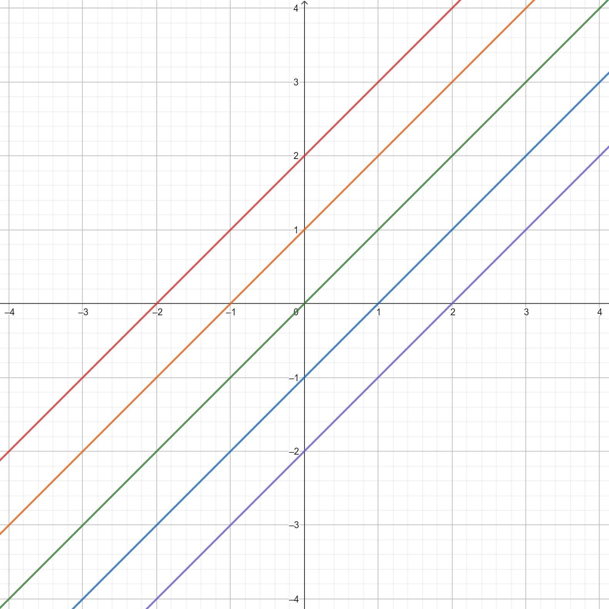
Jeśli teraz porównamy te funkcje, to możemy dojść do wniosku, że są to równoległe linie (tak samo nachylone), ale niektóre są wyżej, inne niżej. Dodawanie do \(x\) podnosi wykres, a odejmowanie go obniża. Najłatwiej skupić się tutaj na wartości w zerze, czyli na przecięciu z osią Y. Widzimy, że czerwona linia jest najwyżej, a każda kolejna o oczko niżej. Ten punkt, wartość w zerze, jest o tyle ciekawy, że jak spróbujemy podstawić 0 do funkcji, to \(x\) nam znika i zostaje tylko to, co dodaliśmy, lub odjęliśmy. \(f(0) = 0 + 2 = 2\).
Wbrew pozorom to bardzo ważny wniosek. Pozwala on bardzo szybko określić, co do \(x\) było dodane, albo od niego odjęte. Spróbuj to zrobić na podstawie poniższej ryciny.
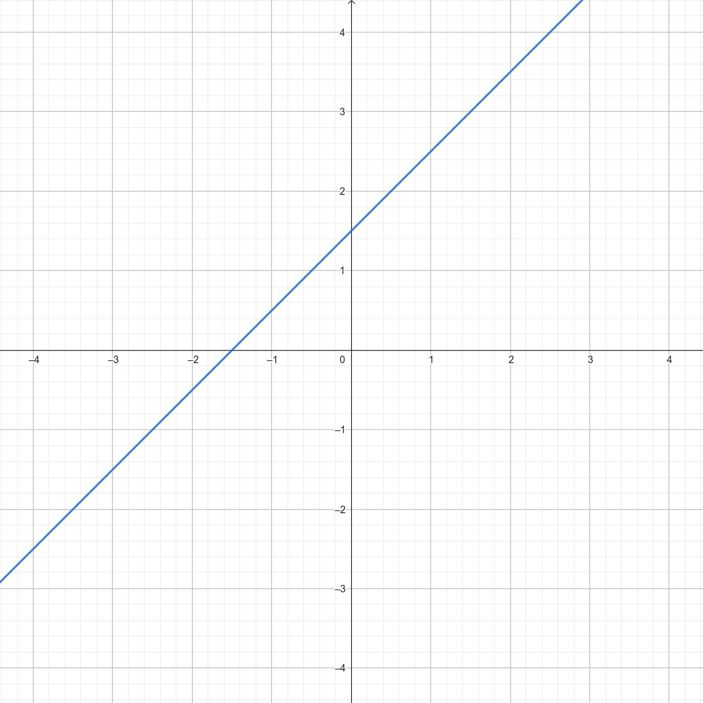
Możemy iść taką logiką – skoro \(x\) nie ma żadnego wpływu na wartość funkcji, jeśli wynosi 0 (bo zostaje tylko to, co dodajemy lub odejmujemy), to wystarczy spojrzeć na \(f(0)\). Tutaj wynosi ta wartość \(1,5\) i rzeczywiście, ta funkcja to \(f(x) = x + 1,5\). Nazywamy to wyraz wolny (ang. intercept) i najłatwiej go odczytać właśnie z przecięcia z osią Y. Wyraz wolny zawsze ma wartość równą \(f(0)\). Wyraz wolny decyduje o tym, czy wykres funkcji jest wyżej, czy niżej.
Drugi współczynnik trudniej jest zrozumieć, dlatego warto się tu skupić mocniej. Naszkicujmy 5 funkcji – \(f(x) = 2x\), \(g(x) = 1x\), \(h(x) = 0x\), \(i(x) = -1x\), \(j(x) = -2x\).
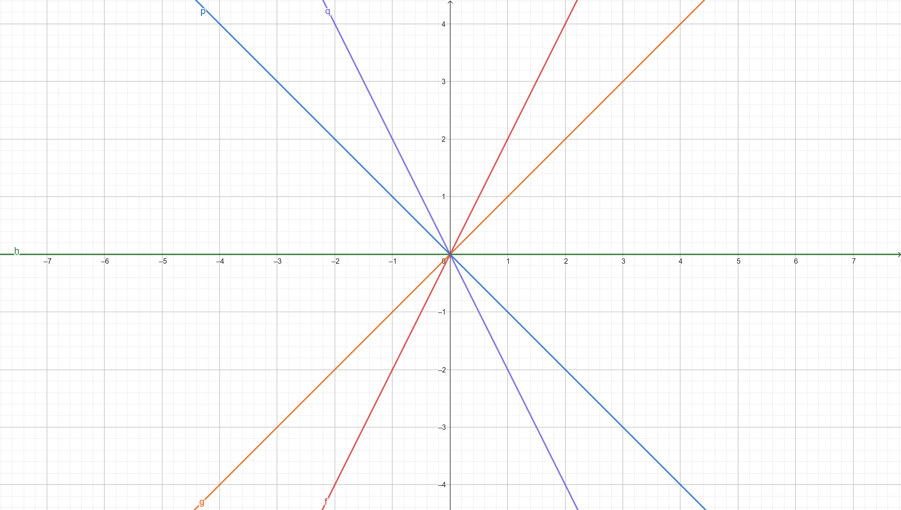
Żeby się nie zgubić, porównajmy na początek funkcje zaznaczone na czerwono i pomarańczowo. Mam pytanie. Jeśli byłyby to schody, to po których wolał(a)byś wchodzić? Jeśli nie szukasz wszędzie okazji do fitnessu (to pisząc sięgam po kolejnego wafla z kremem orzechowym), to pewnie wybierzesz schody pomarańczowe. Są bowiem mniej strome. Innymi słowy mają mniejsze nachylenie.
Porównajmy teraz obie te funkcje do funkcji zaznaczonej na zielono. Zielona funkcja jest płaska. Ma zerowe nachylenie. Nie ma się co dziwić, po uproszczeniu jej wzór to \(h(x) = 0\) – niezależnie, co wrzucimy, wyrzuci ona 0. Jej wartość jest stała. Następnie przechodzimy do funkcji niebieskiej i fioletowej – co do obu możemy zauważyć, że im bardziej przesuwamy palcem w prawo, tym niżej jesteśmy. Obie te funkcje są malejące, ale funkcja fioletowa maleje szybciej.
Zauważmy jednak, że wszystkie te funkcje przechodzą przez \((0, 0)\). Nachylenie nie ma więc związku z tym, czy wykres jest przesunięty w górę, czy w dół. To, jak już ustaliliśmy, kontroluje wyraz wolny. Rampa jest tak samo stroma na pokładzie samolotu i w piekle.
Nachylenie kontrolowane jest przez tzw. współczynnik kierunkowy, czyli liczbę, przez którą mnożę \(x\). Im ta liczba większa, tym bardziej stromy wykres. Jeśli ta liczba jest ujemna, funkcja jest malejąca.
Ustaliliśmy więc, że funkcje liniowe kontrolowane są przez dwie wartości:
Współczynnik kierunkowy, czyli liczbę, przez którą mnożę \(x\) – kontroluje nachylenie.
Wyraz wolny, czyli liczbę, którą dodaję do \(x\) – kontroluje położenie w pionie.
Jeśli porwiemy się na to szaleństwo i połączymy mnożenie z dodawaniem, to otrzymamy wzór ogólny funkcji liniowej:
\[ f(x) = ax + b \]
Oczywiście oznaczenia, jak zawsze, są umowne. Równie dobrze mogę napisać \(m(l) = sl + w\) albo nawet \(m(l) = sl + m(0)\), bo \(m\) to maszyna, \(l\) to liczba, \(s\) to stromizna, a \(w\) to wyraz wolny, który zawsze ma wartość równą wartości funkcji w zerze. Niezależnie, jakie literki sobie wybierzemy, funkcje, które da się przedstawić jako mnożenie \(x\) i dodawanie (lub odejmowanie4), będą miały kształt prostej linii. W standardowej notacji literką \(a\) oznacza się współczynnik kierunkowy, zaś literką \(b\) wyraz wolny.
Statystyczny spoiler: linie regresji to proste linie, dlatego one również mają taką postać. Zazwyczaj zapisywane są upiornie wyglądającą notacją typu \(\beta_0 + \beta_1 X\), ale to cały czas to samo, tylko w odwrotnej kolejności i literkami greckimi. Nie dajcie się zwieść, to jest tylko po to, żeby Was przestraszyć.